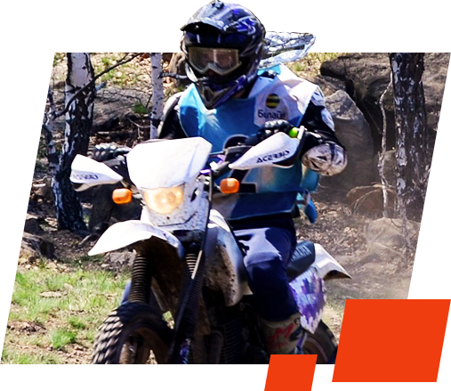

Motocross
staza
Ekstreman sport za ljubitelje adrenalina
Lokacija
Za ljubitelje ovakvog tipa sporta nema ništa ljepše nego provesti dan sa svojom ekipom na planini. Mjesto Harambašine vode nalazi se na 1330 metara nadmosrke visine. Mjesto obiluje šumama i ravnicama paj teren pogodan za atrakciju poput ove.
